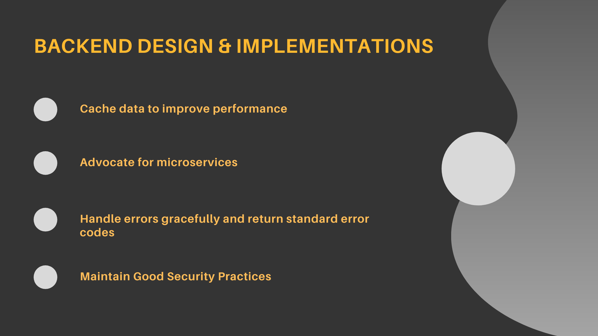
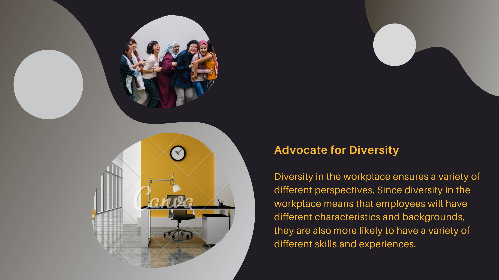
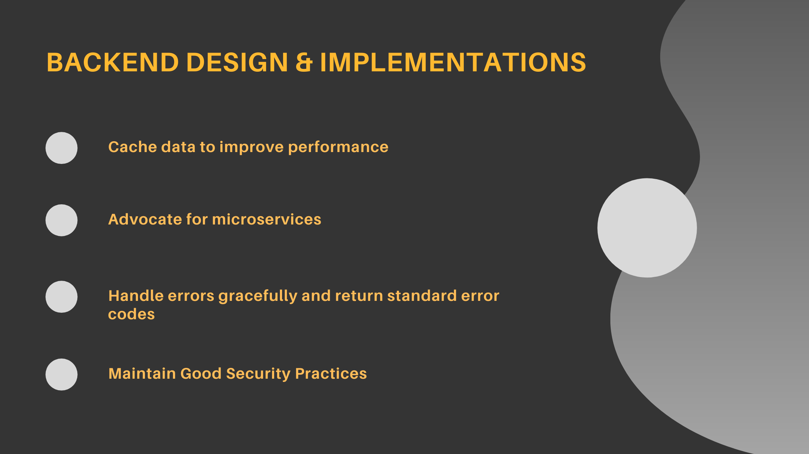
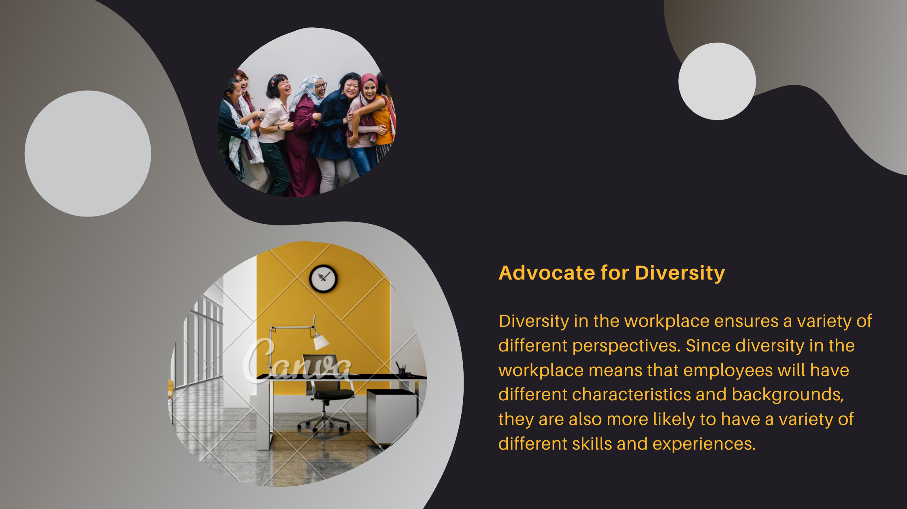

Angular / Reactjs / Vuejs
Frontend Frameworks to make modern styled client apps
 



Software Engineer
An agnostic software developer who aspires to be a Software Architect. He is well rounded with IT knowledge which boosts his ability to troubleshoot errors both within application development and provisioning of network nodes for deployment, especially with AWS cloud computing. A firm believer in test-driven development and collaboration through git to establish a consistent and automated way to build, package, and test applications as well as ensures there is an automated way to push code changes to production.
Angular / Reactjs / Vuejs
Frontend Frameworks to make modern styled client apps
NODE / SPRING

JavaScript / Java for powerful microservices
DATABASE MANAGEMENT
MySQL / PostgreSQL / MONGODB / REDIS / ORACLE